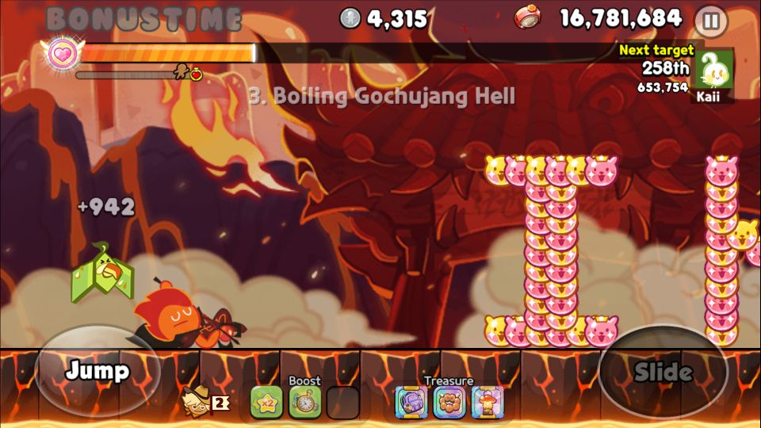
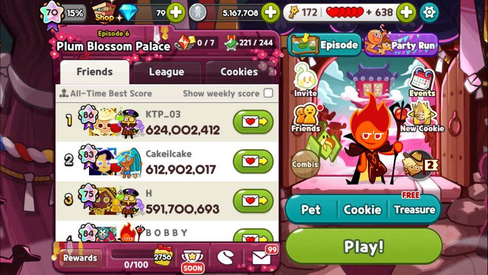

Desired Boost (ครบ 11) + Relic Claim
01Goal & Scope
เพิ่ม 2 feature จาก README ของ cookierun-classic-bot ที่ netrunner ยังไม่ครบ: ① Desired Random Boost ทุกแบบ (เลือก 1 จาก 11 boost — ตอนนี้ทำได้แค่ 3) และ ② Relic Claim อัตโนมัติ (เมื่อ Relic Complete popup โผล่). ทั้งคู่ engine พร้อมแล้ว — งานที่เหลือคือ crop template @1920×1080 + วัดพิกัดจากเกมจริง ซึ่งต้องมี emulator (เครื่อง dev ไม่มี).
| Scope | Item |
|---|---|
| IN | Crop banner 8 boost + วัด buy_taps → เติม PROFILES · crop 2 relic marker + วัดพิกัดปุ่ม → เพิ่ม relic probe state · verify แต่ละตัวบนเกมจริง |
| OUT | แก้ engine (mechanism มีครบ) · เปลี่ยน buy-chain shape · relic ที่ episode ไม่มี relic feature |
src/boost.py PROFILES + apply_boost()
ที่ทำใน Phase 3 แล้ว — เพิ่ม profile = เพิ่ม dict entry. Relic ใช้ action close_popup + probe state
append เข้า popup chain (append-only ไม่แตะ state เดิม). เป็นงาน template + config + วัดพิกัดล้วน.
02① Desired Boost — เติมให้ครบ 11
--boost {magnet,speed,doublecoins} ทำงานแล้ว (Phase 3). อีก 8 ตัวอยู่ใน
PROFILES แต่ banner: None → apply_boost refuse พร้อมบอกว่าต้อง crop อะไร.
สถานะ 11 boost
| Key | Boost | reference @720p (cookierun-bot) | สถานะ |
|---|---|---|---|
magnet | Magnetic Aura | BOOST_MAGNETIC_AURA_1.png | พร้อม |
speed | +17% Base Speed | BOOST_17P_BASE_SPEED_1.png | พร้อม |
doublecoins | Double Coins | BOOST_DOUBLE_COINS_1.png | พร้อม |
goldcoinmagic | Gold Coin Magic | BOOST_GOLD_COIN_MAGIC_1.png | crop |
crush70 | 70% Crush Chance | BOOST_70P_CRUSH_CHANCE_1.png | crop |
hpdrain15 | -15% HP Drain | BOOST_M15P_HP_DRAIN_1.png | crop |
revive80 | Revive Once with 80 HP | BOOST_REVIVE_ONCE_WITH_80HP_1.png | crop |
score15 | +15% Score Bonus | BOOST_15P_SCORE_BONUS_1.png | crop |
potions20 | +20% HP from Potions | BOOST_20P_HP_FROM_POTIONS_1.png | crop |
collision30 | -30% Collision Damage | BOOST_M30P_COLLISION_DAMAGE_1.png | crop |
pitlifts2 | 2 Pit Lifts | BOOST_2PIT_LIFTS_1.png | crop |
matchTemplate
เป็น single-scale ใช้ข้าม resolution ไม่ได้. ใช้เป็น reference ภาพว่า pill หน้าตาไง เท่านั้น.
อยู่ที่ D:\Project\Mini Project\cookierun-classic-bot\templates\BOOST_*.png
ต้องเก็บอะไรต่อ boost — 3 อย่าง
# src/boost.py — PROFILES entry (เทียบกับ magnet ที่ทำไว้แล้ว) "goldcoinmagic": { "label": "Gold Coin Magic", "banner": "goldcoin_banner.png", // ① crop pill ตอน equipped @1080p "buy_taps": [(cx1,cy1), (cx2,cy2)], // ② taps จาก shop -> Multi picker "multibuy": (cx, cy), // ③ ปุ่ม Multi-Buy ของ picker }
- ① banner — pill ที่โชว์เหนือ Play เมื่อ boost นั้น equipped (
probe_<boost>/start_runอ่านตัวนี้). crop title ribbon แคบ ๆ (tight crops match ดีสุด) - ② buy_taps — taps ที่พาจาก boost shop → picker ที่เปิด Multi. ดู note ด้านล่างเรื่องจำนวน tap ต่างกัน
- ③ multibuy — ปุ่ม Multi-Buy ใน picker (auto-roll จนได้ boost ที่ตั้ง)
apply_boost รองรับทั้ง 2 แบบอยู่แล้ว
(taps สั้นกว่า baseline = ตัด tap แรก + wait อัตโนมัติ).
ขั้นตอนต่อ boost (ทำทีละตัว ไม่บล็อกกัน)
- เปิด shop, equip boost นั้น —
python tools/snap.py --device 127.0.0.1:5555 --out snaps/ตอน pill โผล่ - Crop banner →
templates/cookierun/<boost>_banner.png(verify score: self=1.0 / home<0.4) - วัด buy_taps + multibuy — เปิด shop นับ tap จริงว่าต้องกดตรงไหนถึงถึง Multi picker
- เติม
PROFILESในsrc/boost.py— เปลี่ยน"banner": Noneเป็นไฟล์จริง + ใส่ taps - Verify —
python main.py --config config/cookierun/boxrun_toggle.json --boost <boost> --dry-run --max-cycles 60 -vดู log ว่า detect เปลี่ยนเป็น banner ใหม่ + buy taps ถูกจุด
python main.py --help — บรรทัด --boost list ready + บอกว่าตัวที่ยังไม่พร้อมต้อง crop อะไร (มาจาก describe_choices())
03② Relic Claim — เมื่อ Relic Complete โผล่
Relic เป็น 2 popup ต่อเนื่อง: RELIC_COMPLETE (relic สะสมครบ → กดเปิด) → RELIC_CLAIM (กด claim → close → รอ cutscene ~10–15s). netrunner ยังไม่มี template/state ทั้งคู่ → โผล่มาตอนนี้ = bot ค้าง.
Flow (port จาก cookierun-bot actions.py:215-226)
// 2 probe state ต่อเนื่อง แทรกใน popup chain probe_relic_complete: detect: relic_complete_marker.png on_match: tap RELIC_COMPLETE_BUTTON (เปิด relic) -> wait -> goto probe_relic_claim on_absent: goto probe_relic_claim // เผื่อ complete ปิดไปแล้ว claim ยังอยู่ probe_relic_claim: detect: relic_claim_marker.png on_match: tap RELIC_CLAIM_BUTTON -> wait -> tap RELIC_CLOSE_BUTTON -> wait 10-15s (cutscene!) -> goto home on_absent: goto <probe ตัวถัดไปใน chain>
ต้องเก็บ
| สิ่งที่ต้อง crop/วัด | คืออะไร | reference (cookierun-bot @720p) |
|---|---|---|
relic_complete_marker.png | marker หน้าจอ Relic Complete | RELIC_COMPLETE_1.png (85×31) |
relic_claim_marker.png | marker หน้าจอ Relic Claim | RELIC_CLAIM_1.png (419×50) |
| RELIC_COMPLETE_BUTTON (x,y) | ปุ่มเปิด relic complete | cookierun-bot: (530,110) @720p |
| RELIC_CLAIM_BUTTON (x,y) | ปุ่ม claim | (640,580) @720p |
| RELIC_CLOSE_BUTTON (x,y) | ปุ่มปิดหลัง claim | (1076,154) @720p |
ขั้นตอน
- รอ relic โผล่จริง / trigger เอง — snap ทั้ง 2 จอ (complete + claim) เข้า
snaps/ - Crop 2 marker →
templates/cookierun/relic_complete_marker.png+relic_claim_marker.png(title ribbon) - วัดพิกัดปุ่ม 3 จุด — complete-open / claim / close จากจอจริง
- เพิ่ม 2 probe state ใน box-farm configs — แทรกใน popup chain (เช่น หลัง
probe_prevresults) - รอ cutscene 10–15s หลัง close — ใช้
waitaction (relic เล่น animation ยาว, ถ้าไม่รอ = bot tap มั่วตอน cutscene) - Verify —
python tools/lint_config.py config/cookierun/*.json(chain ต่อครบ 0 orphan) + dry-run บนจอ relic จริง
close_popup action ได้: action มีอยู่แล้ว (tap + verify + retry). relic_complete/claim เข้าข่าย popup dismiss →
{"type":"close_popup","x":..,"y":..,"verify":"relic_claim_marker.png"} จะ verify ว่าปิดจริงแล้วค่อยไปต่อ.
แต่ relic_claim ต้องมี wait 10–15s หลัง close (cutscene) — ต่อ wait action แยก.
Flow จริงที่ observe ได้ (ต่างจาก design ด้านบน)
ไม่ใช่ 2 popup (COMPLETE→CLAIM) แต่เป็น 4 state ต่อเนื่อง: badge บน home → Relic screen (มี
fragment counter ในตัว ไม่แยก "complete" popup ต่างหาก) → reward popup → screen รีเซ็ต. ไม่มี cutscene
10-15s จริง — ใช้ close_popup + wait สั้น ๆ ต่อ state พอ.
| Design เดิม | โค้ดจริง |
|---|---|
relic_complete_marker.png | relic_get_marker.png (badge "Get!" บน home banner) |
relic_claim_marker.png | relic_screen_marker.png (ribbon "Relic" — ไม่ผูกกับ artefact art ที่ต่างกันแต่ละ episode) |
| ไม่มีในแผนเดิม | relic_reward_marker.png ("Congratulations!" popup — congrats_marker เดิม match แค่ 0.570 ไม่พอ ต้อง crop แยก) |
probe_relic_complete → probe_relic_claim | probe_relic → relic_claim → relic_reward → relic_close |
| wait 10-15s cutscene หลัง close | ไม่มี cutscene ยาว — แต่ต้อง absent_retries เพราะทั้ง Relic screen และ reward popup render ช้ากว่า wait แรกที่ใส่ไว้ |

probe_relic detect (แทนที่ RELIC_COMPLETE popup)


goldcoinmagic, crush70, hpdrain15,
revive80, score15, potions20, collision30,
pitlifts2) — รอ crop banner จริงจากเกมก่อนถึงเพิ่มรูปได้.
04Relic states แทรกตรงไหน
popup chain เดินจาก home.on_absent → probe ทีละตัว. แทรก relic ก่อน chain ตัน:
// ตัวอย่างจุดแทรก (ดู probe chain จริงใน boxrun_magnet.json) probe_prevresults --absent--> probe_relic_complete // ← แทรกตรงนี้ | probe_relic_claim | --absent--> probe_dailycheckin // chain เดิมต่อ
05Risk / Trade-off
| Risk | Mitigate |
|---|---|
| Relic cutscene ยาวกว่า 15s → bot tap มั่วตอน animation | ใส่ match_timeout_ms ที่ relic state + wait เผื่อยาว; ถ้า marker ยังอยู่หลัง timeout = escape กลับ home |
| buy_taps ของ boost ใหม่อยู่คนละ view (HP-Upgrade vs Multi ตรง) | apply_boost รองรับ taps สั้น/ยาวอยู่แล้ว — วัดจริงว่าต้องกดกี่ครั้งแล้วใส่ตามนั้น |
| boost banner คล้ายกัน (score ใกล้) → detect ผิดตัว | crop เฉพาะส่วนที่ต่าง (ชื่อ boost) ไม่เอาพื้นหลัง; verify score ของ boost อื่นต้อง <0.7 บน banner นี้ |
| relic ไม่โผล่บ่อย → เทสยาก | Phase 7 collector (unknown_screens/) เก็บ relic จอให้เองถ้ารัน unattended; หรือเล่นสะสม relic เองให้ครบก่อนเทส |
06Verification
# boost ตัวใหม่ python main.py --help # ready list ควรมี boost ใหม่ python main.py --config config/cookierun/boxrun_toggle.json --boost goldcoinmagic --dry-run --max-cycles 60 -v # -> log: detect เปลี่ยนเป็น goldcoin_banner.png + buy taps ตรงจุด # relic python tools/lint_config.py config/cookierun/*.json # 0 orphan, chain ต่อครบ python -m pytest tests/ # ยังเขียว (config เพิ่ม state ไม่ทำ test พัง) # dry-run บนจอ relic จริง -> relic_complete/claim detect + tap ถูกจุด + รอ cutscene
- Boost: แต่ละตัว dry-run แล้ว log ยืนยัน detect banner ถูก + buy taps ตรง · เลือกตัวที่ยังไม่ครบ → error บอกชัดว่าขาดอะไร
- Relic: lint 0 orphan · pytest เขียว · dry-run: complete → เปิด → claim → close → รอ 10–15s → กลับ home ครบ flow
- อย่า enable บน account จริงจนกว่า dry-run ผ่าน — โดยเฉพาะ relic (tap ผิดตอน cutscene = เสีย relic)
src/boost.py (Phase 3, plan
05_PLAN_feature-parity-anti-detection.html section 04). popup coverage + crop workflow อยู่ใน
docs/popup-coverage.md. cookierun-bot reference: actions.py (relic 215-226, desired boost 105-125).